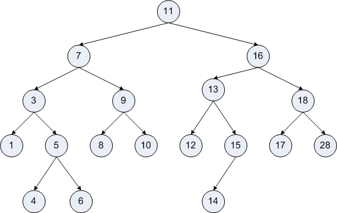
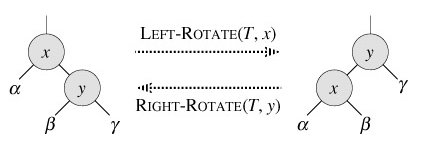

闲下来了，开始写一点学习笔记，也希望能给后人造福吧。
Treap是什么
Tree + Heap
树堆（英语：Treap），是有一个随机附加域满足堆的性质的二叉搜索树，其结构相当于以随机数据插入的二叉搜索树。其基本操作的期望时间复杂度为$O(\log {n})$。相对于其他的平衡二叉搜索树，Treap的特点是实现简单，且能基本实现随机平衡的结构。
基本思想及操作
一般在Treap里面维护一个最小堆。
旋转
旋转是一种不破坏二叉搜索树性质的操作，有左旋及右旋两种。具体操作在代码部分解释。
旋转的时间复杂度是$O(1)$，因为只需要修改常数个指针。
按关键字寻找
可以发现，在要寻找的关键字小于当前节点关键字时，其节点只可能在当前节点的左子树中；等于时即为当前节点；大于时候在右子树中。于是可以根据关键字寻找到节点。
插入
在Treap中，插入需要根据二叉搜索树的性质，找到能放置这个节点的空位置，给新节点随机分配一个优先值，然后调整Treap的堆性质。
删除
如果需要删除一个节点，首先应当寻找到这个节点，并将这个节点旋转至最底层，即左右儿子皆为空的时候，删除该节点。并注意需要在旋转过程中维护最小堆性质。
查询排名
在这里排名是指小于某数的数的个数+1。注意到在某二叉搜索树中，小于根节点的节点数目即为根节点左子树的节点数目。所以只需要按关键字查找到此节点，并如果向右搜索，就加上此节点左子树的大小和根节点的大小，进行递归搜索。
按排名查找
需要对每一个节点维护一个size值，意为以其为根节点的树的大小（包括本身）。搜索的时候，如果排名小于当前节点左子树的size值直接递归进入左子树；如果排名落在当前节点，则返回当前节点；否则更新排名向右子树递归。
前驱&后继
在这里，前驱定义为小于x，且最大的数。后继同理。这个的寻找稍微复杂。
以前驱为例。
如果寻找到的节点有左子树，那么其前驱就是左子树里面的最大值；如果没有左子树，那么其前驱就是寻找的路径上最靠近的一个向右寻找的节点。
第一种很容易想明白，第二种稍难一些。

以此图为例。比如我们寻找12的前驱，它没有左子树，所以它属于情况二。按照刚才提到的规则，可以发现12的前驱是11，因为11是最后一个向右寻找，即下一次寻找是其右儿子（16）的节点。
可以注意到，11的左子树上的点全都比6小，不符合要求；12的左子树不存在，12的右子树上的点都比12大，而11-12的路径上的点，其应当是全都是向左寻找的，也都比12要大，而在11以上的点，应当都比12要大（11是左儿子的时候），或者比11要小（11是右儿子的时候），所以，6就是7的前驱。
后继同理。
插入、删除等以上操作的期望时间复杂度都是$O(\log {n})$，因为树的期望高度h是$\log {n}$。
代码
以洛谷P3369 普通平衡树为例。代码是指针版，不记录父节点，递归操作，有轻微压行，采用java换行风格。
（其实我还是觉得数组好写
结构体的定义
1 | template<typename T,size_t siz> |
在这里采用了模板的定义方法。T为一个模版类。需要注意这里的T模板要有小于运算符。
对于每一个节点，我们维护以下几个信息：关键字，随机优先值，以其为根的二叉搜索树的大小，和这个关键字的数量，左儿子和右儿子的指针。默认0为左，1为右。
在结构体的变量中，我们维护了一个静态内存池，内存池已经使用的数量，根节点的指针，以及一个虚的空节点。
在这里自己定义一个空节点的好处主要是可以避免NULL导致的segmentation fault，以及让函数编写变得更加简单。
需要注意的是，视题目不同，cnt变量可能可以省去。
一些简单函数
1 | void newnode(node_t *&r){ |
newnode函数在这里完成对节点初始化的任务，并对子节点赋值。需要注意以下，这里需要使用引用的方法，否则如果使用了返回值的办法，就不能使用newnode函数对null赋值了，因为会产生NULL这种可怕的东西。其实在这里也可以把赋关键字、随机值、size值等事情一并完成，但是我比较懒，所以就在后面手动赋值了。
update函数在这里完成对节点size值的更新，很好理解。
find_minormax函数在这里完成对以r为根节点的树上最大或最小节点的寻找。也很简单，就不解释了。
后两个函数可以放到node结构体里面，但是我不太喜欢那么做，因为那样会使箭头的数目大大增多，从而导致头疼（雾。
结构体的初始化
1 | treap(){ |
结构体的初始化不难，有几点需要注意：
- 空指针的
size需要为0 - 空指针的随机值需要足够大（最大堆中足够小，最好是maxint，否则有可能在之后的删除操作中被转上去，然后树就断了
- 最好srand一下
旋转
1 | void rotate(node_t *&r,int tmp){//0左旋，1右旋 |

旋转操作的文字叙述：
（括号里文字以左旋为例）
- 选定当前节点r （图中的x）
- 找到并记录需要旋上来的节点t（左旋旋右儿子，右旋左儿子）（图中的y）
- 把t将要被覆盖的儿子（与旋转方向相同的儿子）接到t在r原来的位置上 （把b接在x的右子位置上）
- 把r接到t空出来的位置上 （把x接到y的x的左子树上）
- 更新
size值 （更新x，y的size）
由于我们没有记录父节点，所以这个旋转的写法跟Splay的旋转写法不太像。但其实Splay也可以这么写，只不过没有必要。
其实这个记不下来不要紧。大概有个印象，要写的时候根据二叉搜索树的性质现推也可以其实。（误
但需要注意的是，旋转很有可能（就是会破坏一个合法Treap的堆性质，所以旋转在Treap中只用来维护堆的性质，而不用在其他的地方。而且这里的指针是引用传递，才能修改对应父节点的儿子指针。
有一点很重要的就是要维护size的值，而且是从下到上。
插入
1 | void __insert(node_t *&r,T v){ |
用文字说明Treap的插入策略：
- 递归边界：寻找到节点，cnt++或者已经到达空节点，赋值一个新节点
- 递归添加节点，比当前节点小向左，比当前节点大向右
- 维护最小堆的性质
- 更新
size值
在维护最小堆的性质的时候，如果子节点的权值较小，那我们就需要把它转上来。
需要注意，这里的节点是引用方式传入，这样才能对父节点的儿子指针进行修改，从而完成树的连接
再次重复，不要忘记更新size值。
删除
1 | void __erase(node_t *&r,T v){ |
用文字说明Treap的删除策略：
- 递归边界：要删除的节点没有儿子节点
- 寻找到当前节点，减少数量或者向下旋转
- 维护最小堆的性质，即把两个儿子中权值较小的旋转上来
- 递归删除节点注意此处的节点指针仍是r，因为r在旋转中已经发生了变化
- 更新
size值
删除的时候最需要注意的已经在上面指出。
还有在旋转比较的时候一定比较的是优先级！！！
Treap的删除和插入其实很像，只不过递归的位置相反。插入是先递归再维护，而删除是先维护再递归。
查询排名&排名查询
1 | int __getrank(node_t *r,T v){//查找数v的排名 |
这两个比较简单，而且在上面也讲的很详细了，所以就一块说。
查询排名和排名查询其实是相反的操作，只需要注意将+1，-1和空节点等问题处理好了就可以了。
前驱和后继
1 | node_t *loworup(T v,int t){//0代表前驱，1代表后继 |
这两个操作其实是完全相反的，所以合到了一个函数里面，在后面的进一步的封装中再分开。
思路在上面已经提到，在这里只需要注意对不存在的值的前驱／后继进行处理。我们查不到不存在的值的节点，但我们可以假装那里有一个节点。因为null的孩子也是null，所以这段代码也可以直接使用在值的前驱和后继里面。
多说一句，在Splay里面，我们可以直接把待查节点splay到根然后瞎搞一通
输出树
1 | void __print(node_t *r,int depth = 0){ |
按照中序遍历打印一棵树。主要在调试的时候用的多。有一个小技巧就是记录一个深度，然后把深度长度的空格打印出来，这样就可以更直观的看到各个节点的深度什么的。
封装
1 | void insert(T v){__insert(root,v);} |
封装其实没有必要，可以用一些判断来代替。但是我们为了让代码更像工程的代码，而且让前面的代码更美观，更令人赏心悦目，所以我们封装一下吧。
完整代码及注释
1 |
|
update:数组版代码
1 |
|